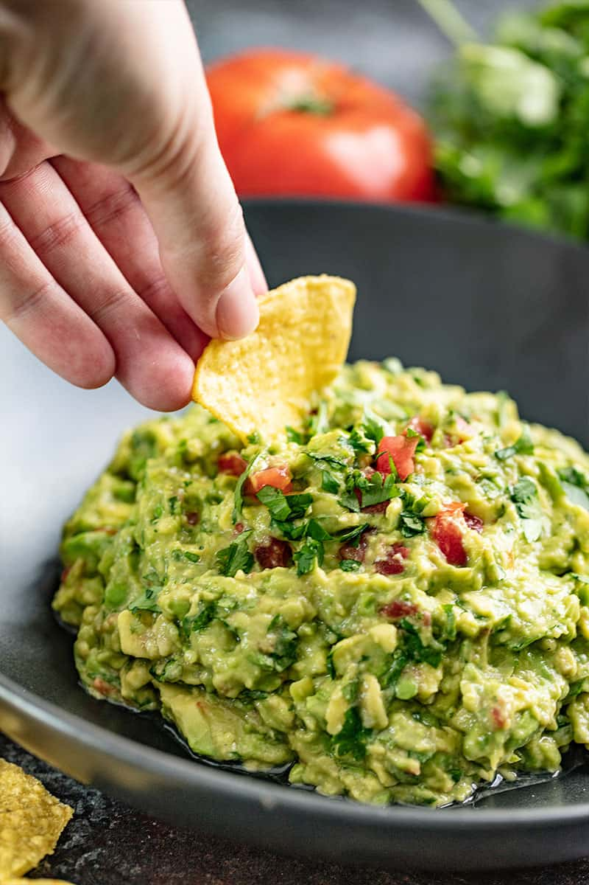

Guacamole

Authentic Guacamole
This Authentic Guacamole recipe is simple and delicious! It has that buttery,
mild avocado flavor with a rich mix of herbs and spices—and it goes with everything!
Ingredients
- 2 medium avocados
- 1 medium roma tomato
- 21 clove garlic unpeeled
- 1 small serrano pepper
- 2 tablespoons lime juice
- 1/4 cup chopped fresh cilantro
- 1/4 teaspoon salt
Steps
- Heat a heavy skillet or griddle over high heat. Roast the tomato, garlic, and pepper until the skins are blackened, turning every few minutes.
The garlic will roast faster so you'll want to take it off first.
- Remove the skins from the tomato, garlic, and pepper.
- In a food processor (or use a molcajete for authentic preparation), puree the garlic, pepper, and tomato.
- Add in the avocado, cilantro, lime juice, and salt. Pulse until well combined, but still chunky. Add more salt to taste.